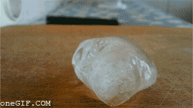

Texto
🔄 Cambios en la materia
A nuestro alrededor la materia cambia continuamente. Algunos cambios solo modifican el aspecto de una sustancia, mientras que otros producen sustancias nuevas.
Tipos de cambios en la materia
Podemos distinguir dos tipos principales de cambios: físicos y químicos.
🔄 Cambio físico
En un cambio físico no se forman sustancias nuevas. La materia sigue siendo la misma aunque cambie su forma o su estado.
- no aparecen sustancias nuevas
- la composición de la sustancia no cambia
- solo cambia el aspecto o el estado
Ejemplos:
- fundir hielo
- cortar papel
- disolver azúcar en agua

🧪 Cambio químico
En un cambio químico sí se forman sustancias nuevas, y estas tienen propiedades diferentes a las iniciales.
- aparecen sustancias nuevas
- la composición de la materia cambia
- se produce una reacción química
Ejemplos:
- quemar madera
- oxidación del hierro
- cocinar un huevo

📌 Idea clave
La diferencia fundamental es que en un cambio químico se forman sustancias nuevas, mientras que en un cambio físico la sustancia sigue siendo la misma.